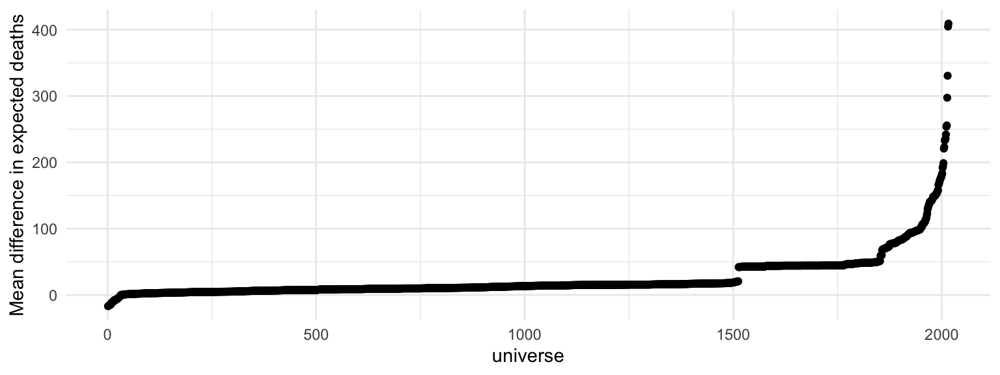

hurricane.RmdIn this document we re-implement the specification curve analysis by Simonsohn et al. [http://dx.doi.org/10.2139/ssrn.2694998] using the Multiverse library. We first begin by loading the dataset which is provided by the library. We then rename some of the variables and perform some data transformations which standardises some of the variables (mean = 0 and standard deviation = 1).
data("hurricane") # read and process data hurricane_data <- hurricane %>% # rename some variables rename( year = Year, name = Name, dam = NDAM, death = alldeaths, female = Gender_MF, masfem = MasFem, category = Category, pressure = Minpressure_Updated_2014, wind = HighestWindSpeed ) %>% # create new variables mutate( post = ifelse(year>1979, 1, 0), zcat = as.numeric(scale(category)), zpressure = -scale(pressure), zwind = as.numeric(scale(wind)), z3 = as.numeric((zpressure + zcat + zwind) / 3) )
We then illustrate an implementation of the original analysis by Jung et al. [https://doi.org/10.1073/pnas.1402786111]. The original analysis used a negative binomial model, which is suitable for overdispersed count data. Due to some issues with model fit with the MASS::glm.nb function (see Note 3: https://github.com/uwdata/boba/tree/master/example/hurricane), we instead use the simpler poisson regression model which will ensure that none of the models fail while fitting.
In the original analysis, Jung et al. exclude two hurricanes which caused the highest number of deaths (Katrina and Audrey) as outliers. They transform the variable useed the interactions between the 11-point femininity rating and both damages and zpressure respectively, as seen below:
To implement a multiverse analysis, we first need to create the multiverse object:
M <- multiverse()
In their implementation, Simonsohn et al. describe a principled method of excluding outliers based on extreme observations of death and damages. The consider it reasinable to exclude up two most extreme hurricanes in terms of death, and upto three most extreme hurricanes in terms of damages. This space of decisions is implemented using multiverse as follows:
df <- hurricane_data %>% filter(branch(death_outliers, "no_exclusion" ~ TRUE, "most_extreme_deaths" ~ name != "Katrina", "most_extreme_two_deaths" ~ ! (name %in% c("Katrina", "Audrey")) )) %>% filter(branch(damage_outliers, "no_exclusion" ~ TRUE, "most_extreme_one_damage" ~ ! (name %in% c("Sandy")), "most_extreme_two_damage" ~ ! (name %in% c("Sandy", "Andrew")), "most_extreme_three_damage" ~ ! (name %in% c("Sandy", "Andrew", "Donna")) ))
The next decision involves identifying the appropriate dependent variable for the primary effect — how do we operationalise femininity of the name of a hurricane. Simonsohn et al. identify two distinct ways. First, using the 11 point scale that was used in the original analysis; or second using a binary scale.
The other decision involved is whether or not to transform damages, another independent variable. damages follow a long tailed, positive only valued distribution.
We implement these two decisions in our multiverse as follows:
The next step is to fit the model. We can use either a log-linear model or a poisson model for the step. Both are reasonable alternatives for this dataset. We also have to make a choice on whether we want to include an interaction between femininity and damage
fit <- glm(branch(model, "linear" ~ log(death + 1), "poisson" ~ death) ~ branch(main_interaction, "no" ~ femininity + damage, "yes" ~ femininity * damage ) + branch(other_predictors, "none" ~ NULL, "pressure" %when% (main_interaction == "yes") ~ femininity * zpressure, "wind" %when% (main_interaction == "yes") ~ femininity * zwind, "category" %when% (main_interaction == "yes") ~ femininity * zcat, "all" %when% (main_interaction == "yes") ~ femininity * z3, "all_no_interaction" %when% (main_interaction == "no") ~ z3 ) + branch(covariates, "1" ~ NULL, "2" ~ year:damage, "3" ~ post:damage), family = branch(model, "linear" ~ "gaussian", "poisson" ~ "poisson"), data = df) broom::tidy(fit)
pred <- predict(fit, se.fit = TRUE, type = "response") pred2expectation <- function(mu, sigma) { branch(model, "linear" ~ exp(mu + sigma^2/2) - 1, "poisson" ~ mu) } disagg_fit <- df %>% mutate( fitted = pred$fit, # add fitted predictions and standard errors to dataframe se.fit = pred$se.fit, deg_f = df.residual(fit), # get degrees of freedom sigma = sigma(fit), # get residual standard deviation se.residual = sqrt(sum(residuals(fit)^2) / deg_f) # get residual standard errors ) # aggregate fitted effect of female storm name expectation <- disagg_fit %>% mutate(expected_deaths = pred2expectation(fitted, sigma)) %>% group_by(female) %>% summarise(mean_deaths = mean(expected_deaths), .groups = "drop_last") %>% compare_levels(mean_deaths, by = female)
After we’ve specified our multiverse analysis, we would like to execute the entire multiverse, and view the results. Below, we plot the mean difference point estimate for expected deaths when a hurricane has a more feminine name, for each unique analysis path. We find that based on these arbitrary specifications of the multiverse, there is perhaps no relation between femininity of the name of a hurricane and the number of deaths that it causes, as some models predict a lower number of deaths, and some predict much higher.
execute_multiverse(M) mean_deaths <- multiverse::expand(M) %>% extract_variables(expectation) %>% unnest(expectation) mean_deaths %>% arrange(mean_deaths) %>% mutate(.id = 1:nrow(.)) %>% ggplot(aes(y = mean_deaths, x = .id)) + geom_point() + theme_minimal() + labs(x = "universe", y = "Mean difference in expected deaths")
